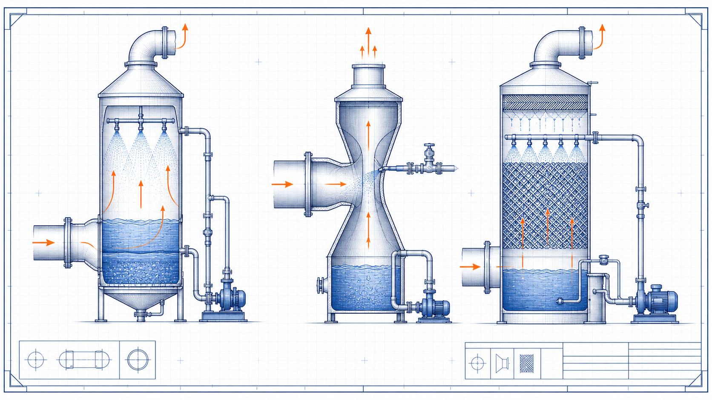

Gas-treatment engineering guide
Wet Scrubbers: Working Principle and Applications
Wet Scrubbers: Working Principle and Applications is a focused gas-treatment engineering guide within the Industrial Calculation Hub knowledge library. It explains the engineering purpose, physical basis, governing inputs, process or equipment interfaces, common failure mechanisms and the limits of preliminary use.

- Content type
- Gas-treatment engineering guide
- Canonical ID
- ICH-CAN-006
- Source basis
- Air-pollution-control literature
- Last reviewed
- 31 August 2026
What is Wet Scrubbers: Working Principle and Applications?
Wet Scrubbers: Working Principle and Applications concerns using liquid-gas contact to remove particulate matter, soluble gases or chemically reactive constituents from an industrial gas stream. It should be evaluated as a complete air path rather than as an isolated fan, duct or treatment device. The useful engineering boundary starts where the pollutant is released and ends at the approved discharge, recirculation or liquid-treatment interface.
Wet scrubbers expose the gas to droplets, films or packed surfaces. Particles are collected by inertial or diffusional contact with liquid, while soluble gases transfer into the liquid and may react with an added reagent. The selected contactor determines pressure loss, liquid requirement and removal mechanism.
Why the system basis matters
For Wet Scrubbers: Working Principle and Applications, a number calculated without the source condition, layout and operating range can be misleading. The governing case may be a cold start, a high-production run, a partially blocked collector, an open access panel or a changed process rather than the nominal point recorded on a data sheet.
Key engineering terms
- System boundary
- The release source, capture or treatment device, connecting ductwork, fan, discharge route and relevant utilities.
- Operating point
- The measured or calculated combination of flow, pressure, temperature and condition at which Wet Scrubbers: Working Principle and Applications is assessed.
- Verification evidence
- Measurements, inspections, test records and source documents that demonstrate whether the intended duty is achieved.
Engineering principle and mechanism
Wet Scrubbers: Working Principle and Applications depends on Wet scrubbers expose the gas to droplets, films or packed surfaces. Particles are collected by inertial or diffusional contact with liquid, while soluble gases transfer into the liquid and may react with an added reagent. The selected contactor determines pressure loss, liquid requirement and removal mechanism.
The critical variables are gas flow, temperature, humidity and pollutant loading, particle size or gas solubility, liquid-to-gas ratio and recirculation rate, pressure drop and fan capability, water chemistry, solids loading and wastewater route. Their interaction must be checked on the same reference basis: actual temperature, actual gas composition, actual equipment condition and the operating configuration in use when the result is measured.
Inputs that control the outcome
- gas flow, temperature, humidity and pollutant loading
- particle size or gas solubility
- liquid-to-gas ratio and recirculation rate
- pressure drop and fan capability
- water chemistry, solids loading and wastewater route
Do not substitute a nominal fan capacity, a catalogue pressure loss or a typical contaminant value for the actual condition without recording the limitation. If one input is uncertain, show its effect on the result rather than presenting a single over-precise number.
Practical engineering review method
- Step 1. match the scrubber type to the contaminant rather than calling all wet scrubbers equivalent for Wet Scrubbers: Working Principle and Applications.
- Step 2. size the mist eliminator for the expected gas velocity and droplet loading for Wet Scrubbers: Working Principle and Applications.
- Step 3. calculate blowdown from dissolved solids and reagent balance for Wet Scrubbers: Working Principle and Applications.
- Step 4. select corrosion-resistant materials for the full wet gas path for Wet Scrubbers: Working Principle and Applications.
- Step 5. monitor pressure drop, pH, conductivity, pump flow and differential pressure for Wet Scrubbers: Working Principle and Applications.
After the initial adjustment or selection, repeat the measurements at the condition most likely to challenge Wet Scrubbers: Working Principle and Applications. A commissioning sheet should identify the instrument, measurement position, operating lineup, filter or equipment condition, observed result and any remaining action.
Where it is used
Wet Scrubbers: Working Principle and Applications is commonly encountered in acid-gas absorption, fertilizer plants, metal finishing, chemical processing, odour control and particulate quenching. The same principle can apply across industries, but the acceptable exposure, emission limit, material compatibility, utility availability and safety controls are site-specific.
Typical failure modes and warning signs
- a scrubber may transfer a pollutant to water without providing an adequate liquid-treatment route
- poor droplet separation causes visible carryover and downstream corrosion
- scale, solids and nozzle blockage reduce contact quality
- freezing, biological growth or corrosion can disable recirculation equipment
Trend the variable that directly represents performance before making a major adjustment. A pressure change, flow change, outlet concentration change, liquid-flow change or abnormal temperature often gives earlier warning than a visual inspection alone.
Maintenance, safety and change control
Wet Scrubbers: Working Principle and Applications should be reviewed whenever the source material, throughput, temperature, layout, duct configuration, fan, treatment media, reagent, filter condition or control logic changes. Confirm isolation, access, lifting, draining, confined-space, chemical and fire hazards before maintenance. Record the restored configuration so later tests can be compared with a known baseline.
Design verification and operating cases
Wet Scrubbers: Working Principle and Applications should be checked against more than one convenient operating point. The decision record needs the source condition, the measured airflow or gas flow, the pressure condition, the equipment line-up, the condition of the collection or treatment stage and the instrument basis. A value from a clean, steady system cannot automatically represent the dirty, variable or maintenance condition.
gas flow, temperature, humidity and pollutant loading
For Wet Scrubbers: Working Principle and Applications, this variable must be tied to match the scrubber type to the contaminant rather than calling all wet scrubbers equivalent. If it changes, compare the resulting duty with the warning that a scrubber may transfer a pollutant to water without providing an adequate liquid-treatment route. The corrective action should be based on measured evidence, not on a visual impression alone.
particle size or gas solubility
For Wet Scrubbers: Working Principle and Applications, this variable must be tied to size the mist eliminator for the expected gas velocity and droplet loading. If it changes, compare the resulting duty with the warning that poor droplet separation causes visible carryover and downstream corrosion. The corrective action should be based on measured evidence, not on a visual impression alone.
liquid-to-gas ratio and recirculation rate
For Wet Scrubbers: Working Principle and Applications, this variable must be tied to calculate blowdown from dissolved solids and reagent balance. If it changes, compare the resulting duty with the warning that scale, solids and nozzle blockage reduce contact quality. The corrective action should be based on measured evidence, not on a visual impression alone.
pressure drop and fan capability
For Wet Scrubbers: Working Principle and Applications, this variable must be tied to select corrosion-resistant materials for the full wet gas path. If it changes, compare the resulting duty with the warning that freezing, biological growth or corrosion can disable recirculation equipment. The corrective action should be based on measured evidence, not on a visual impression alone.
water chemistry, solids loading and wastewater route
For Wet Scrubbers: Working Principle and Applications, this variable must be tied to monitor pressure drop, pH, conductivity, pump flow and differential pressure. If it changes, compare the resulting duty with the warning that a scrubber may transfer a pollutant to water without providing an adequate liquid-treatment route. The corrective action should be based on measured evidence, not on a visual impression alone.
Field evidence that strengthens a decision
Use a documented traverse, differential-pressure reading, liquid-flow record, outlet concentration result or other measurement suited to Wet Scrubbers: Working Principle and Applications. Repeat the same method after adjustment, and retain the date, line-up and equipment condition. This comparison is more useful than an isolated “pass” result because it shows whether the change improved the actual duty.
Example engineering questions
Ask whether the design case represents the highest source loading, whether the available fan or treatment capacity still covers the dirty-condition resistance, whether an operator can keep the intended hood or system configuration in use, and whether a change transfers the environmental burden to another stream. These questions make Wet Scrubbers: Working Principle and Applications a practical system review instead of a catalogue selection exercise.
Acceptance and reassessment
In the acceptance record for Wet Scrubbers: Working Principle and Applications, document how the team will match the scrubber type to the contaminant rather than calling all wet scrubbers equivalent. That action must be compared with the credible consequence that a scrubber may transfer a pollutant to water without providing an adequate liquid-treatment route. State the owner, evidence source, review date and the operating change that will require the result to be checked again.
In the acceptance record for Wet Scrubbers: Working Principle and Applications, document how the team will size the mist eliminator for the expected gas velocity and droplet loading. That action must be compared with the credible consequence that poor droplet separation causes visible carryover and downstream corrosion. State the owner, evidence source, review date and the operating change that will require the result to be checked again.
In the acceptance record for Wet Scrubbers: Working Principle and Applications, document how the team will calculate blowdown from dissolved solids and reagent balance. That action must be compared with the credible consequence that scale, solids and nozzle blockage reduce contact quality. State the owner, evidence source, review date and the operating change that will require the result to be checked again.
In the acceptance record for Wet Scrubbers: Working Principle and Applications, document how the team will select corrosion-resistant materials for the full wet gas path. That action must be compared with the credible consequence that freezing, biological growth or corrosion can disable recirculation equipment. State the owner, evidence source, review date and the operating change that will require the result to be checked again.
In the acceptance record for Wet Scrubbers: Working Principle and Applications, document how the team will monitor pressure drop, pH, conductivity, pump flow and differential pressure. That action must be compared with the credible consequence that a scrubber may transfer a pollutant to water without providing an adequate liquid-treatment route. State the owner, evidence source, review date and the operating change that will require the result to be checked again.
Frequently Asked Questions
Do wet scrubbers remove every gas?
No. Performance depends on solubility, reaction chemistry, contact area, residence time and the selected liquid.
Which inputs should be confirmed for Wet Scrubbers: Working Principle and Applications?
Inputs that control the outcome gas flow, temperature, humidity and pollutant loading particle size or gas solubility liquid-to-gas ratio and recirculation rate pressure drop and fan capability water chemistry, solids loading and wastewater route Do not substitute a nominal fan capacity, a catalogue pressure loss or a typical contaminant value for the. Confirm the source, condition and measurement basis for each input before treating a calculated or selected value as reliable.
How should Wet Scrubbers: Working Principle and Applications be reviewed in practice?
Practical engineering review method Step 1. match the scrubber type to the contaminant rather than calling all wet scrubbers equivalent for Wet Scrubbers: Working Principle and Applications. Step 2. size the mist eliminator for the expected gas velocity and droplet loading for Wet Scrubbers: Working Principle and Applications. Step 3. calculate blowdown. Record the actual operating line-up and repeat the review at the condition most likely to challenge performance.
What warning signs deserve early attention?
Typical failure modes and warning signs a scrubber may transfer a pollutant to water without providing an adequate liquid-treatment route poor droplet separation causes visible carryover and downstream corrosion scale, solids and nozzle blockage reduce contact quality freezing, biological growth or corrosion can disable recirculation equipment Trend the variable that directly represents. A trend linked to the physical mechanism is more useful than waiting for a single visible failure.
What evidence supports acceptance?
Design verification and operating cases Wet Scrubbers: Working Principle and Applications should be checked against more than one convenient operating point. The decision record needs the source condition, the measured airflow or gas flow, the pressure condition, the equipment line-up, the condition of the collection or treatment stage and the instrument basis.. Keep the records traceable so later maintenance or a process change can be compared with the original basis.
When should Wet Scrubbers: Working Principle and Applications be reassessed?
Reassess it after a change in duty, throughput, process material, temperature, pressure, geometry, maintenance condition, control logic or a recurring abnormal trend. The original result is valid only for the conditions it represented.
Can a typical value or handbook rule be used for final design?
Only as a preliminary screen. Final decisions for Wet Scrubbers: Working Principle and Applications need the actual component or system data, applicable standard, supplier limits and qualified engineering review.
Where should an engineering investigation begin?
Start by defining the system boundary and current operating condition, then compare measured evidence with the design intent. Address the controlling mechanism before changing capacity, setpoints or hardware.
References
- Air Pollution Control Technology Handbook. Supplied source library.
- Cheremisinoff, N. P. Handbook of Air Pollution Prevention and Control. Supplied source library.
Original educational summary informed by the supplied literature. It does not reproduce protected source text, figures, tables or standards material.